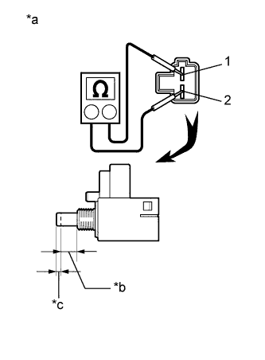

ПЕРЕКЛЮЧАТЕЛЬ ПЕДАЛИ СЦЕПЛЕНИЯ > УСТАНОВКА |
| 1. УСТАНОВИТЕ ПУСКОВОЙ ПЕРЕКЛЮЧАТЕЛЬ МУФТЫ СЦЕПЛЕНИЯ В СБОРЕ |
Для моделей с левосторонним рулевым управлением:
Установите пусковой переключатель муфты сцепления в сборе и закрепите его гайкой.
Подсоедините разъем пускового переключателя муфты сцепления.
Для моделей с правосторонним рулевым управлением:
Установите пусковой переключатель муфты сцепления в сборе и закрепите его гайкой.
Подсоедините разъем пускового переключателя муфты сцепления и присоедините зажим.
| 2. ПРОВЕРЬТЕ ПУСКОВОЙ ПЕРЕКЛЮЧАТЕЛЬ МУФТЫ СЦЕПЛЕНИЯ В СБОРЕ |
|  |
Измерьте сопротивление в соответствии со значениями, приведенными в таблице ниже.
| Контакты для подключения диагностического прибора | Положение переключателя | Заданные условия |
| 1 - 2 | ON (ВКЛ) (нажат) | Менее 1 Ом |
| 1 - 2 | OFF (ВЫКЛ) (не нажат) | 10 кОм или более |
| *a | Устройство с неподсоединенным жгутом проводов (пусковой переключатель муфты сцепления в сборе) |
| *b | ON (ВКЛ): 7,65 - 8,35 мм (0,302 - 0,328 дюйма) |
| *c | OFF (ВЫКЛ): 1,65 - 2,35 мм (0,0650 - 0,0925 дюйма) |